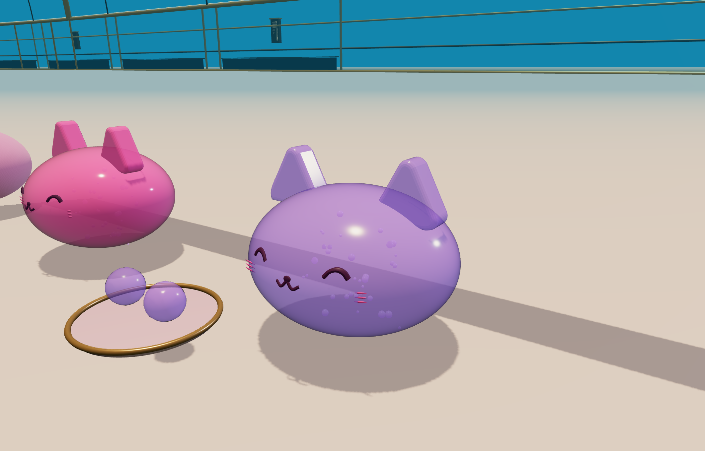
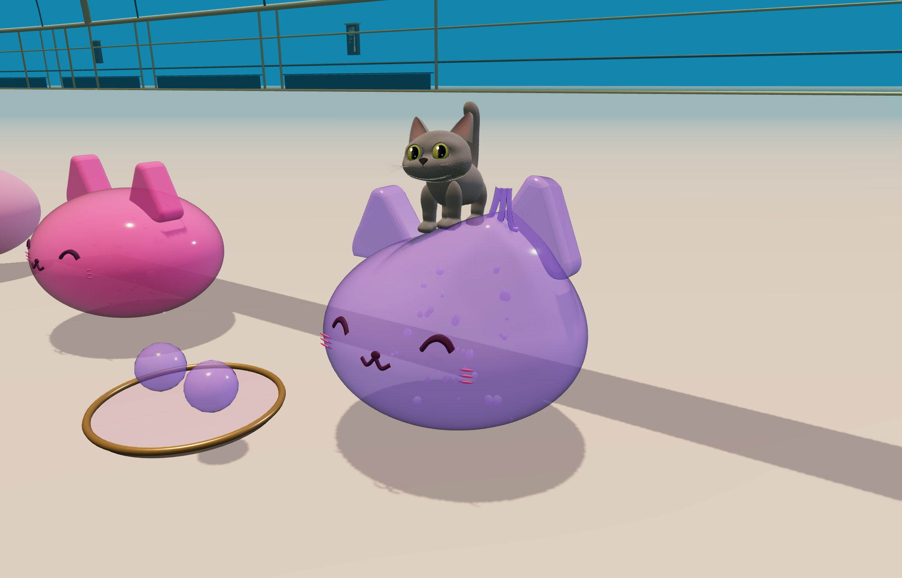
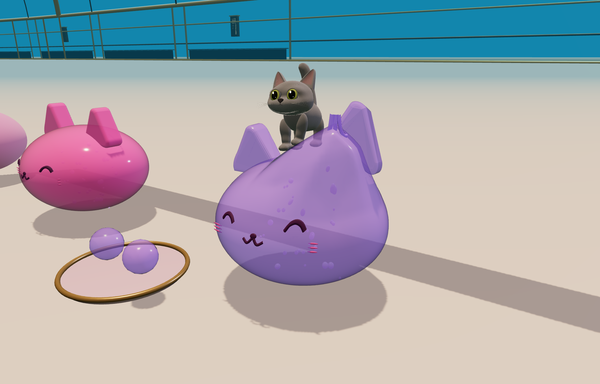
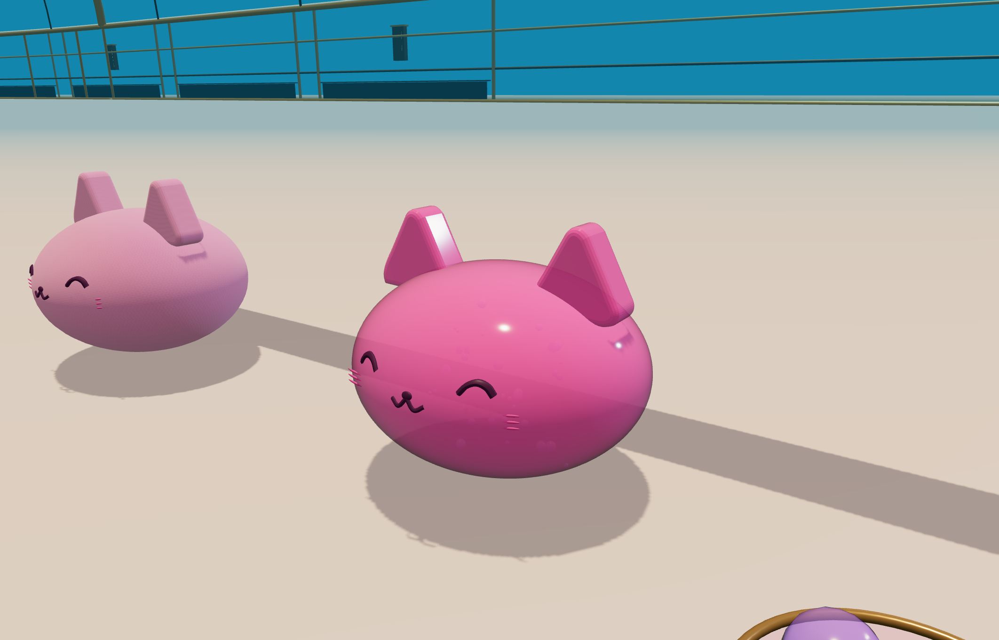
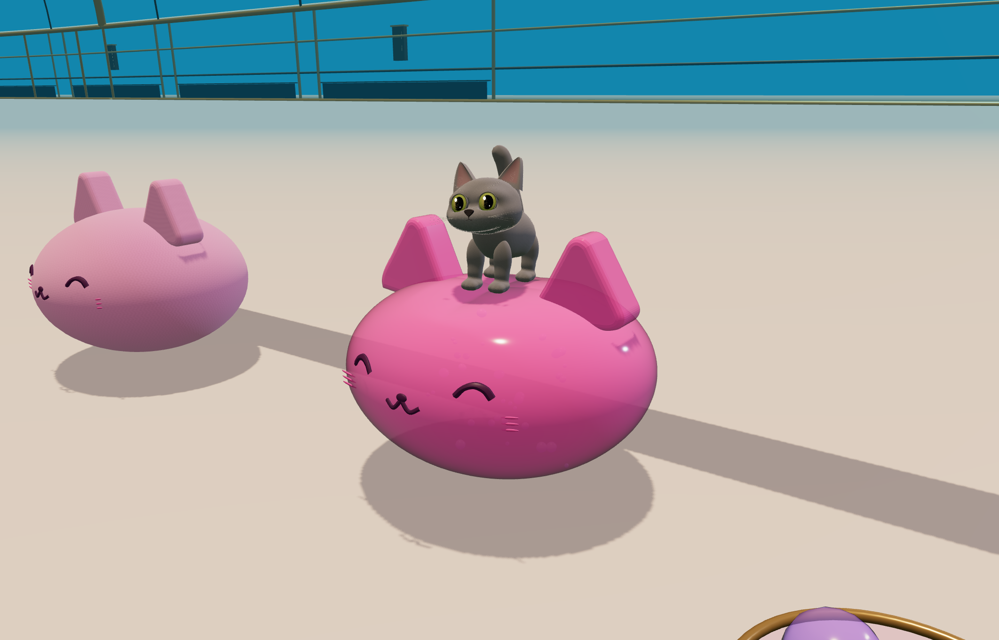
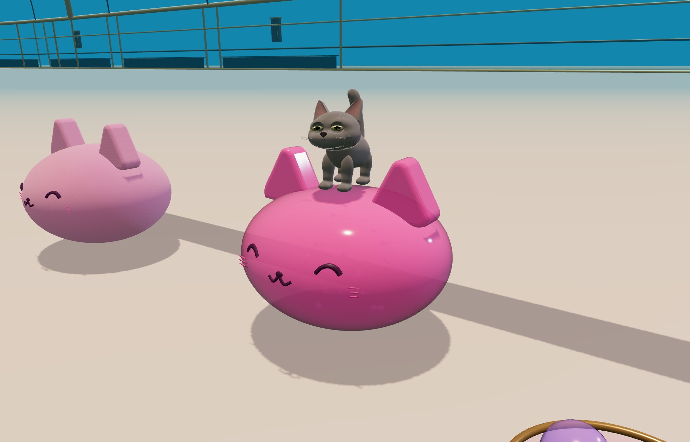

The user reference was viewed inline. Its original image bytes are not mounted; no invented original or generated game evidence is substituted.
| Reference state | Actual game | Review |
|---|---|---|
| slime: REST |  Actual measurements/source metadata | Await semantic inspection. Existing primary pink model proof is separate. Slime merge remains a labelled implicit approximation. |
| slime: STRETCH |  Actual measurements/source metadata | Await semantic inspection. Existing primary pink model proof is separate. Slime merge remains a labelled implicit approximation. |
| slime: TWIST / STRANDS |  Actual measurements/source metadata | Await semantic inspection. Existing primary pink model proof is separate. Slime merge remains a labelled implicit approximation. |
| slime: MERGE / RELAX | Actual measurements/source metadata | Await semantic inspection. Existing primary pink model proof is separate. Slime merge remains a labelled implicit approximation. |
| jelly: NORMAL |  Actual measurements/source metadata | Await semantic inspection. Existing primary pink model proof is separate. Slime merge remains a labelled implicit approximation. |
| jelly: COMPRESSION |  Actual measurements/source metadata | Await semantic inspection. Existing primary pink model proof is separate. Slime merge remains a labelled implicit approximation. |
| jelly: WOBBLE |  Actual measurements/source metadata | Await semantic inspection. Existing primary pink model proof is separate. Slime merge remains a labelled implicit approximation. |
| jelly: RECOVERY | Actual measurements/source metadata | Await semantic inspection. Existing primary pink model proof is separate. Slime merge remains a labelled implicit approximation. |